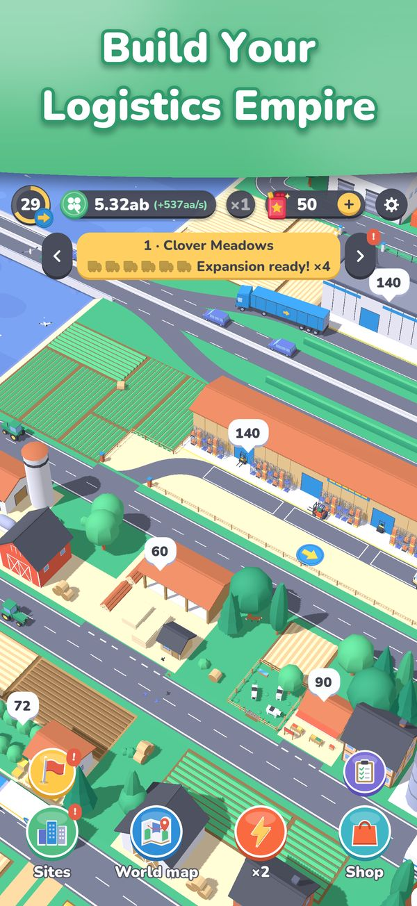
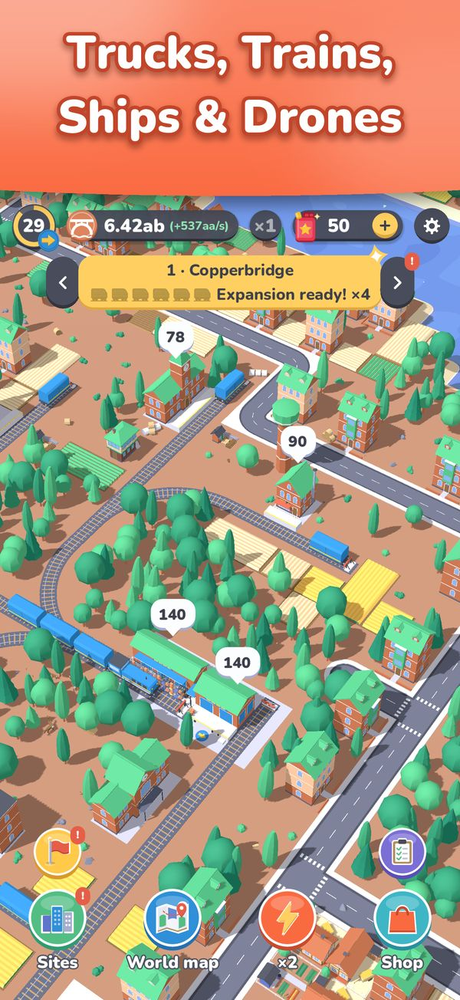
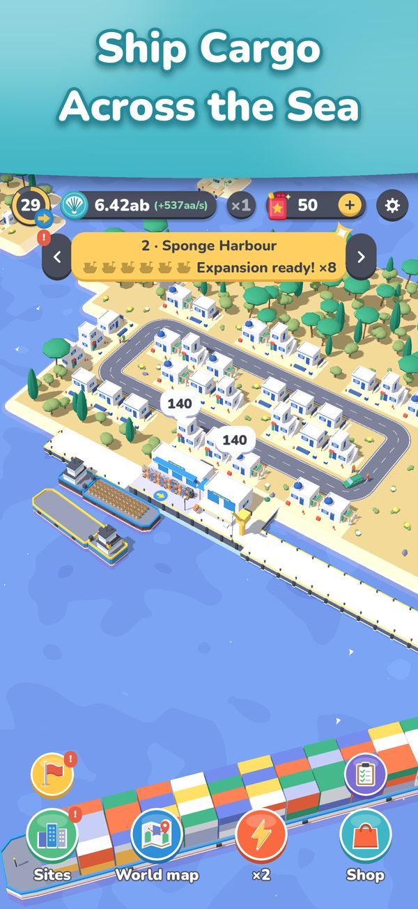
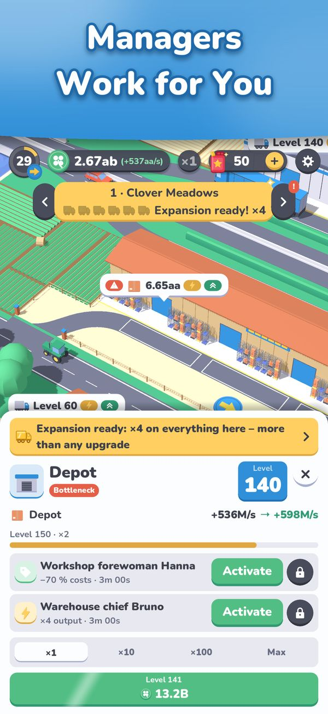
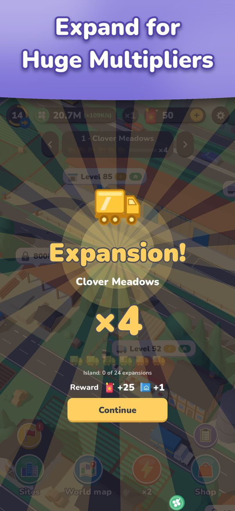
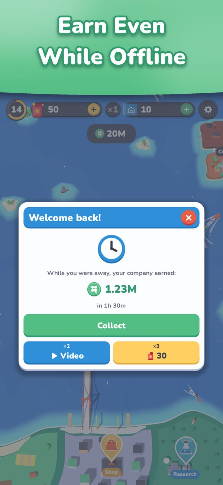

An idle tycoon game about transport and logistics
Idle Transport Corp is an idle logistics game for iPhone. You start a small transport company and grow it into a logistics empire across a whole world of islands, with trucks, freight trains, ships and drones.
Every load earns money. You invest it in faster vehicles, new customers and new sites, and you hire managers who keep it all running. It is a relaxed tycoon game: you make the decisions, your managers do the routine, and your company keeps earning while you're away.
How to play: pick up, transfer, dispatch
Every site is a small supply chain with three stations:
- Pick up. Your vehicles drive to your customers and load their goods. Each site has eight customers, from the farm shop to the blast furnace.
- Transfer. The depot in your company yard moves the freight on.
- Dispatch. The line haul takes it to the mainland. Only dispatch earns money.
The chain is only as fast as its slowest station, and the game marks that station as the bottleneck, so the best upgrade is always easy to find. At milestone levels (10, 25, 50, 100 and more) a station's output doubles. Your fleet starts with a single cargo bike and grows to vans, trucks and road trains.
Screenshots






Four islands: trucks, freight trains, ships and drones
Each island has its own way to haul, its own style, its own music and its own currency. Once an island runs well, you buy the next one with its money. Every island has four sites to build up.
Clover Island: trucks and road trains
Your first island. Trucks drive between farms, a village, an industrial park and a small town, and your yards sit right on the expressway.
Copperbridge Isles: freight trains on the works railway
Four small islands joined by bridges. Freight trains haul brick, salt, steel and oil.
Seagull Isles: boats and cargo ships
Boats and ships sail between little Mediterranean islands.
Anchor City: from cargo bikes to delivery drones
Deliveries in the heart of the big city. Your couriers start on cargo bikes and end up with delivery drones.
Traffic on the roads, people in the streets, deer, gulls and wind in the trees make every island feel alive.
Managers keep your stations running
Every station has room for two managers. Hire one and the station runs by itself. No more tapping. Managers also bring abilities you can switch on for a few minutes, such as ×4 output or much cheaper upgrades; after that they need a rest. Promote them and their abilities grow stronger and last longer.
Expansions: prestige for huge multipliers
Once a site has all its customers, you can expand it. The site starts over, but from then on it earns a multiple of what it did before, up to ×158. Every site can be expanded six times, each expansion pays Super Fuel and blueprints, and your research stays. The in-game help sums it up: as soon as you can afford an expansion, take it.
Research, goals and daily rewards
On the research campus you spend blueprints on 20 research topics in five fields: fleet, yard, staff, office and drive. Research brings bigger cargo beds, faster forklifts, cheaper upgrades and more offline time. It runs in labs even while you're away and works on every island.
Goals lead you through each island step by step and pay Super Fuel or blueprints. The daily reward fills a seven-day calendar, and a missed day doesn't cost you your place. There is also a deal of the day.
Weekly events with their own worlds
Limited-time events open small worlds of their own. A new one starts every week and runs for five days, Wednesday to Sunday; holidays such as Christmas and New Year's Eve have events of their own. Each event brings its own vehicles, currency, music and reward track. The worlds include a lava cave, a solar town of cyclists, an asteroid belt and a pirates' cove. The main prize is a new company colour and +10 % income for good, kept as a trophy in your trophy room.
Offline earnings: your company works while you're away
Close the game and your managers keep working: stations with a manager keep earning while you're gone, at half their usual pace to begin with. At first the game counts up to two hours; the Night shift research raises that to as much as seven. When you come back, collect what your company earned, double it with a video or triple it with Super Fuel.
Make the company your own, too: give it a name, a logo and two colours, and your vehicles drive in them.
Frequently asked questions
Is Idle Transport Corp free?
Yes, it is free to download and to play. Optional in-app purchases offer Super Fuel (the premium currency) and bundles, plus two one-time upgrades: “×2 forever” and “No ads”. There are no subscriptions, and you also earn Super Fuel in the game.
Are there ads?
No forced ads. A video only plays when you start one for a reward, such as a ×2 boost, Super Fuel or double offline earnings. The videos come from Google AdMob; in the EEA and the UK the game asks for your consent first. With “No ads” you get the rewards without the video.
How does the game work?
Vehicles pick up goods, your yard moves them on, and dispatch ships them to the mainland. Only dispatch earns money. Upgrade the slowest station first and hire managers. In the game: Settings (the gear) › Help.
Do I keep earning while the game is closed?
Yes, stations with a manager keep working. The game counts up to two hours away at first; research extends that.
Which devices does it run on?
Idle Transport Corp is made for iPhone and needs iOS 17 or later.
Which languages does the game speak?
14: English, German, Spanish, French, Italian, Dutch, Polish, Brazilian Portuguese, Turkish, Russian, Japanese, Korean and Chinese (simplified and traditional). Change it under Settings › Language.
Where is my progress saved? Can I move to a new iPhone?
Your progress is stored only on your device (there is no account). It is part of your iPhone backup (iCloud or computer): if you set up a new iPhone from a backup, your progress comes along. There is no sync between two devices yet.
How do I restore purchases?
Settings › Restore purchases. This brings back “×2 forever” and “No ads”. Super Fuel and the packs are used up when you get them and cannot be restored (an App Store rule for consumable purchases).
A purchase did not arrive. What can I do?
Close the game completely and start it again. Purchases that were still open are delivered at the start. If it is still missing, write to us with the date and the product (never send payment details). Refunds are handled by Apple: reportaproblem.apple.com.
What data does the game collect?
There is no account, and your progress stays on your device. Purchases run through Apple; we never see payment details. Three partner services handle the videos (Google AdMob), crash reports (Sentry) and game statistics (GameAnalytics; in the EEA, the UK and Switzerland only with your consent). Details: privacy policy.
How do I start over?
Settings › Delete progress. This deletes your progress on this device for good; purchases of “×2 forever” and “No ads” can be restored afterwards.
What's new
Version 1.2.1 (November 2026)
- Day and night: a whole day passes in 24 minutes, windows light up and every vehicle drives with its lights on at night. Hold your favourite time of day in the settings.
- Lively islands: cloud and vehicle shadows, waves rolling onto the coast, people working in the yards.
- The world map shows every island's landmark, the Fleet Log has new vehicle pictures and the top bar wears your island's colours.
- Bottlenecks show even fully zoomed out, and travelling between islands is quicker.
Version 1.2.0 (November 2026)
- Yard build-out: with every expansion you build out the site's yard, more yield or more speed, and every pick stands in the yard. In events the yard grows with Depot and Dispatch.
- Charter Office: send vehicles on charters for 1, 4 or 12 hours; they return with Blueprints, Super Fuel or a boost.
- Fleet Log: every vehicle of your company with its picture, sets and stamps that pay Super Fuel.
- A new look: every window in the style of its island, warmer light and clear water.
- The goal chain up to the sixth expansion, Start all and Hire all in the overview, notifications, eight new company colours.
Support
Questions, problems or ideas? Write to us. We usually answer within a few days:
E-mail: mariohaesler@protonmail.com
Please tell us your device model, iOS version and the game version (at the bottom of the settings).
More from Cavebeer Entertainment
- Idle Monster Forge: your monsters dig gold for you, even while you're away.
- Colorwall: cozy paint by numbers for adults.
All games and apps: Cavebeer Entertainment